|
|
|
|
|

rodzaje klas wêz³y
zielony |
¿agluwki bior¹ce udzia³ w olimpiadzie polacy mag¹ pochwaliæ siê kusznierewiczem zdobywc¹ br¹z w klasie finn w 2004r na olimpiadzie w atenach Star Dwuosobowa klasa ³odzi ¿aglowej dla mê¿czyzn. Jest to najstarsza klasa olimpijska - po raz pierwszy pojawi³a siê podczas Igrzysk w Los Angeles w 1932 roku. Wymaga doskona³ej wiedzy technicznej, a od ¿eglarzy du¿ej si³y i sprawnoœci. Konstruktorzy: Wilhelm Gardner i Francis Sweisguth (USA), 1911Klasa olimpijska od 1932 roku 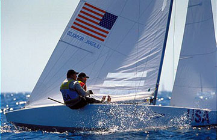 Parametry techniczne: -d³ugoœæ kad³uba: 6,9 m -szerokoœæ kad³uba: 1,7 m -waga: 671 kg -powierzchnia ¿agla: 28 m 
Finn jednoosobowa klasa ³odzi ¿aglowej dla mê¿czyzn. Finn by³ pierwsz¹ konstrukcj¹ ³odzi z wolnonoœnym masztem obrotowym. Ze wzglêdu na du¿¹ powierzchniê ¿agla wymaga zawodników o odpowiedniej sile i wadze. Konstruktor: Rickard Sarby (Szwecja), 1949 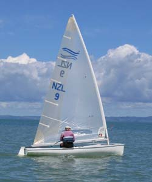Klasa olimpijska od 1952 roku Parametry techniczne: -d³ugoœæ kad³uba: 4,5 m-szerokoœæ kad³uba: 1,51 m - waga: 105 kg -powierzchnia ¿agla: 10 m2
470 Dwuosobowa klasa ¿aglówek dla mê¿czyzn i kobiet. Posiada trzy ¿agle i wymaga od zawodników du¿ej sprawnoœci oraz si³y fizycznej. Konstruktor: Andre Cornu (Francja), 1963 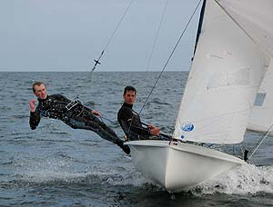 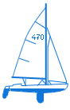Klasa olimpijska od 1976 roku Parametry techniczne: -d³ugoœæ kad³uba: 4,7 m-szerokoœæ kad³uba: 1,68 m -waga: 120 kg -powierzchnia ¿agli - grot: 9,12 m - fok: 3,58 m -spinaker: 13 m
49er Jacht typu skiff (dwuosobowy). Klasa dla mê¿czyzn. Wymaga bardzo wysokich umiejêtnoœci technicznych ze wzglêdu na w¹ski kad³ub i ogromn¹ powierzchniê ¿agli. Niestabilny jacht wyposa¿ony jest po obu stronach w skrzyd³a, które pozwalaj¹ za³odze wychylaæ siê daleko poza burty (balastowaæ). 
 Konstruktor: Julian Bethwaite (Australia), 1989 Klasa olimpijska od 2000 roku arametry techniczne: -d³ugoœæ kad³uba: 4,9 m-szerokoœæ kad³uba: 2,9 m -waga: 125 kg -powierzchnia ¿agli: - grot: 15 m -genaker: 38 m
Laser Jednoosobowa klasa dla mê¿czyzn. Jeden z najpopularniejszych modeli jachtów na œwiecie. £ódka posiada jeden ¿agiel, a od zawodnika wymaga du¿ej sprawnoœci i si³y fizycznej Konstruktor: Bruce Kirby (Kanada), 1976 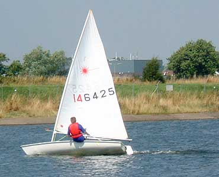 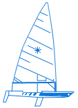Klasa olimpijska od 1996 roku arametry techniczne: -³ugoœæ kad³uba: 4,23 m-szerokoœæ kad³uba: 1,37m -waga: 60 kg -owierzchnia ¿agli: 7,06 m
Tornado Jacht w uk³adzie katamaranu. Klasa dla mê¿czyzn. Jacht powsta³ z myœl¹ stworzenia nowej klasy olimpijskiej. Jach mo¿e osi¹gaæ prêdkoœæ powy¿ej 30 wêz³ów z wiatrem i 18 wêz³ów na wiatr - jest czêsto okreœlany jako "¿eglarska Formu³a 1". Konstruktor: Rodney March (Wielka Brytania), 1967 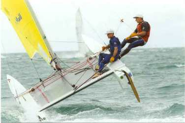 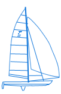Klasa olimpijska od 1976 roku arametry techniczne: -d³ugoœæ kad³uba: 6,1 m-szerokoœæ kad³uba: 1,37m -waga: 130 kg -powierzchnia o¿aglowania -grot: 17 m -fok: 7 m -spinaker: 25 m
Yngling Trzyosobowa ³ódka kilowa. Jest now¹ klas¹ olimpijsk¹ dla kobiet. Jacht jest stabilny, trudno wywrotny i charakteryzuje siê dobr¹ sterownoœci¹. Konstruktor: Jan H. Linge (Norwegia), 1967 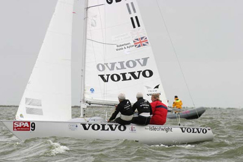 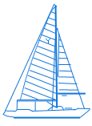Klasa olimpijska od roku 2004 arametry techniczne: -d³ugoœæ kad³uba: 6,35 m-szerokoœæ kad³uba: 1,37m -waga: 130 kg -powierzchnia o¿aglowania: 14 m
Europe Jednoosobowa, lekka ³ódka. Klasa pierwszy raz pojawi³a siê na Olimpiadzie w Barcelonie w 1992 r. jako alternatywa dla kobiet do klasy Finn. Charakteryzuje siê bardzo dobr¹ sterownoœci¹. Konstruktor: Alois Roland (Belgia), 1963 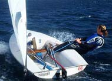Klasa olimpijska od roku 1989 arametry techniczne: -d³ugoœæ kad³uba: 3,4 m-waga: 50 kg -waga: 130 kg -powierzchnia o¿aglowania: 7 m |